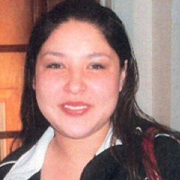

The Indigenous People
What is Indigenous Identity? How is it determined?
Identity can consist of culture, languages, and history. How you present yourself and how others perceive you can determine identity; identity can also be grouped to where you are or where you come from ex. race, class, education, religion.
Colonial domination controlled the Indigenous population through the native communities, bands and tribes. To be considered “Indian with status” you need to be enrolled with your band but legally, the government decides whether or not you have “Indian status” once the following requirements are met:
You are eligible for registration if:
- You were entitled to registration prior to the changing of the Indian Act on April 17, 1985;
- You lost your Indian Status as a result of your marriage to a non-Indian man (s. 12(1)(b)), including enfranchisement upon your marriage to a non-Indian man (s. 109(2));
- Your mother and father's mother did not have status under the Indian Act, before their marriage and you lost your status at the age of 21 (s.12 (1)(a)(iv) – referred to commonly as the double-mother rule);
- Your registration was successfully protested on the grounds that your father did not have status under the Indian Act, however your mother had status;
- You lost your registration because you or your parents applied to give up registration and First Nation membership through the process known as "enfranchisement"; or
- You are a child of persons listed in 1 to 5 above;
You may also be eligible for registration if only one of your parents is eligible to be registered under Section 6(1) of the Indian Act.
If an Indigenous person is recognized as being Indigenous by other Indigenous persons (bands, clans), they can be considered Indigenous. Often times there is a stronger connection to their cultural identity through their traditions and spiritual beliefs. Those that live in a community and are very close to their traditional roots would have no problem explaining what their identity is. They can refer to themselves as being part of a band or clan, or as Indians, Natives, Native Americans, Indigenous people, or First Nations people.
The Aboriginal population is a growing population, according to Statistics Canada, in 2011, the Aboriginal population represented 4.6% of Canada’s population. Studies have shown that 49.6% of Aboriginal kids under the age of 14, have lived with biological or adoptive parents, whereas, 76% of non-aboriginal kids lived with their biological parents. Foster care children are made up of 48.1% of Aboriginal children.
Modern Indigenous Issues
Residential Schools and After Effects
In late 19th century, Canadian government began a systematic separation and assimilation of Indigenous children from their families. Children were taken away by force and placed in Residential Schools operated by the Christian church. The devastating effect took a toll on the Indigenous peoples on a nationwide scale. Students were not permitted to speak or write in their native tongue and were punished severely when caught doing so. Any sort of practice of Aboriginal culture was considered a taboo, which caused many children to develop physical and mental problems (Hanson). Being raised in a highly spiritual environment prior to being taken away, the students were deprived of their needs necessary for growth (Partridge, 2010). Many, if not all of them were abused physically, sexually and psychologically, which led to many cases where the children ran away. Often times the escapees would be caught and punished by being served smaller portions of food or even worse - starvation. All outgoing and incoming letters were heavy censored by the Church further isolating the children. Students were not the only ones affected by Residential schools, their parents suffered as well. They would go for long periods of time without seeing their children; and when they did, neither were the same, resulting in many broken families.
Residential schools were also places that favoured the development of illnesses such as tuberculosis and other potentially fatal bacteria. Throughout the existence of this new system, at least 3,200 Indigenous children died in the overcrowded and unsanitary facilities (Miller, 2016).The goal of the newly formed Government was to teach the Indigenous youth how to be servants, rather than provide them with an academic education. The students’ days mostly consisted of doing chores around their school, and the devoted time for actual studying was minimal. As a result. students who survived their abductors and turned sixteen returned home with an education level equivalent of grade five (Hanson). In order for the victims to mask the pain of what they had undergone, they turn to alcohol and drugs; creating an environment that is not healthy for raising the next generation.
Jennifer Catcheway, a 17 year old that went missing just shy of her 18th birthday, has been missing since 2008. A few days had passed before Bernice Catcheway, Jennifer’s mom, went to the Winnipeg Police Station to report that Jennifer was missing, the constable racially profiled and assumed Jennifer was probably drunk somewhere and would show up; completely disregarding the matter at hand. The police did not take Catcheway seriously, nor did they take statements from the other family members. This particular case is not unique, The police racially profile Indigenous people, assuming they are out drinking and will turn up, unfortunately delaying searches. Most Indigenous people go through this form of racism in the 21st century, and is a problem among the growing rate of missing and murdered Indigenous cases in Manitoba. This article is one of the many instances where Indigenous people are not taken seriously and are racially profiled.


Art and Culture
Winnipeg Artists and Community
Today in Winnipeg there is a staggering amount of Indigenous artists, the demographic has continued to show support, which has led to an increasing involvement among Indigenous people. Approximately 107 Aboriginal Art Organizations were funded by the Canada Council for the Arts in 2006-07. These include dance and theatre companies, publishers, artist run centres, music groups, media arts centres, cultural centres, and multidisciplinary arts organizations. There have been various programs and organizations that have contributed to getting indigenous people involved in the arts at a young age. For example, Graffiti Gallery is one of the more well known companies, it's a non-profit organization that's been established since 1998. Much of their focus has been targeting the North End and Downtown Winnipeg by providing free programming to youth in the areas of Hip-Hop. These programs successfully teach Indigenous youth a variety of skills including: Breakdancing, DJing, Graffiti, and Rapping. It is important for Indigenous people to be involved in the arts, especially in the North End, where drugs, violence, and alcohol abuse rates are rocketing.
One of Graffiti Gallery's programs; the ‘Urban Canvas’, has given Indigenous people the opportunity of employment training and education by learning the skills in the painter/decorator industry, along with a mentorship. Programs such as these have helped Indigenous people find a way to be employed and educated, despite the barriers and stereotypes that Indigenous people face in today's age. ‘Mic Check’ is another program held at Graffiti Gallery, it has attracted a line up of talented Indigenous youth who have been able to transcribe their feelings of self-identity into the music they produce. The strong presence of youth and how important they are to the arts and culture is truly underestimated at times. Studio 393 has attracted a growing number of indigenous rappers who are generating positive impacts; Rene Marriott is one of these indigenous rappers. He talked about how it was growing up being indigenous in today's society, how Hip Hop has affected him, and where it has gotten him today.


According to the Canada Council for the Arts, 3,100 Aboriginal people were artists in 2001, and the majority of these artists are artisans and visual artists. That number has increased over the years, especially here in Winnipeg, where Hip Hop has connected to the indigenous people, and has been an outlet for indigenous people, especially youth. Thankfully we have recognition for Aboriginal music, with festivals such as "Aboriginal music week", and "Manito Ahbee" that recognize Aboriginal artists for their music.
A Tribe Called Red is a Canadian electronic music group consisting of 3 DJs; Ian "DJ NDN" Campeau (of the Nipissing First Nations), Tim "2oolman" Hill (Mohawk, of the Six Nations of the Grand River) and Bear Witness (of the Cayuga First Nation) that blends Hip Hop with First Nations music, particularly vocal chanting and drumming. They have spoken out about cultural appropriation, referring to the people that wear Headdresses, and commented on sports names that have used derogatory words (I.e. Redskins). Indigenous people fight a continuous battle of stereotyping in the music industry, but if more speak out about these issues and are able to address them in a creative outlet, issues such as racism, and stereotypes could be drastically reduced.


Walking the Red Road
The phrase ‘Walking the Red Road’ is known quite well among the Indigenous people, to ’Walk the Red Road’ means to live by the Creators instructions, and is a very important belief among many traditional Indigenous peoples on the path to self-discovery and healing, as many see it as a guide. Many walk the Red Road seeking rehabilitation and a sober life of enlightenment through traditional Aboriginal teaching. Those who devote their lives to the ‘Red Road’ abstain from alcohol or drugs, and normally attend traditional purification ceremonies. The beliefs of the ‘Red Road’ consist of, living in the moment, respecting all of our relations, and finding a balance between our lives; spiritually, physically, mentally, and emotionally. Simply, the Red Road is a lifestyle consisting of balance, respect, humbleness, spirituality, and honesty.
Citations
Images
- CBC News. (n.d.). CBC News. "Missing and Murdered: The Unsolved Cases of Indigenous Women and Girls" Retrieved from: http://www.cbc.ca/missingandmurdered/content/Jennifer_Catcheway.jpg
- Native Americans, Retrieved From
http://gallerily.com/gallery/native+american+groups/17 - Virtual First Ohioans, Retrieved From
https://www.ohiohistory.org/
Text
- A tribe called Red.(2016, Nov 1). Retrieved from
http://atribecalledred.com/ - Aboriginal Peoples in Canada: First Nations People, Métis and Inuit.(2011). Retrieved From
https://www12.statcan.gc.ca/nhs-enm/2011/as-sa/99-011-x/99-011-x2011001-eng.cfm - Canada Council for the Arts (2016, Nov 12). Arts and Culture in Canada Fact Sheet. Retrieved from http://canadacouncil.ca/~/media/files/research%20-%20en/contemporary%20aboriginal%20art%20in%20canada/factsheetaboriginaleng.pdf
- Graffiti Gallery.(2016, Oct 18). Retrieved from
http://www.graffitigallery.ca/ - Harris AKA OSTWELVE Ron (Oct 25). Winnipeg Indigenous Hip-Hop Coalition: 8th Fire. Retrieved from
http://rpm.fm/news/winnipeg-indigenous-hiphop-coalition/ - Miller, J. R. (2012, October 12). The Canadian Encyclopedia. Retrieved from Residential Schools:
http://www.thecanadianencyclopedia.ca/en/article/residential-schools/